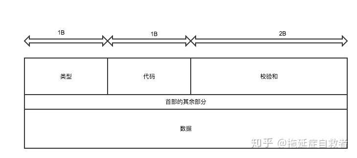

网际校验和算法ICMP校验位计算
- 作者:
- 淡白
- 创建时间：
- 2021-06-10 14:19:34
- ICMP 协议 IP
摘要：本文主要介绍了关于网络知识中的ping命令和其中的ICMP协议。ping命令使用ICMP协议来进行网络连接测试，在ping命令中，发送的数据包中包含了校验和字段。校验和的计算过程是将每两个字节相加，直到最后得出结果，并与前面的结果相加，然后取结果的反码作为最终的校验和。文章还给出了一个Go语言代码示例，展示了如何计算校验和。
面试时聊到了一些网络知识。其中ping这个东西，是我经常用到的但似乎对它又不是很了解，于是去看了下相关协议的介绍。它使用了一种协议叫ICMP（Internet Control Message Protocol）Internet控制报文协议。 报文结构： 其中校验和计算：
- 将校验和字段置为0。
- 将每两个字节（16位）相加（二进制求和）直到最后得出结果，若出现最后还剩一个字节继续与前面结果相加。 (溢出)将高16位与低16位相加，直到高16位为0为止。
- 将最后的结果（二进制）取反。
func CheckSum(data []byte) uint16 {
var sum uint32 //uint32符合校验位站2字节
var length = len(data)
var index int
for index <= length-2{
//对每两个字节相加 其中对每两字节中的第一个字节左移8位再加上后面一位 组成一个16位数加到结果中
sum += uint32(data[index]) << 8 + uint32(data[index+1])
index += 2
}
//如果有单独一个字节也按照16位进行相加
if length%2==1{
sum += uint32(data[length-1])<<8
}
//sum >> 16 高16位的值加32位的sum 取32位中低16位的值再取反
sum += sum >> 16
return uint16(^sum)
}